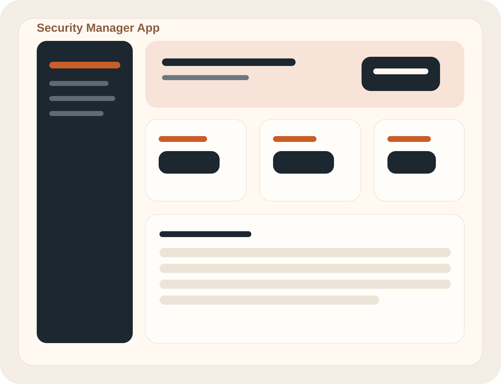

About
現場の不便を、使えるかたちに翻訳する。
zen は、倉庫業務・物流の現場で20年以上、日々の動線と作業の詰まりを見続けてきました。 その経験を土台に、今は Web アプリや業務支援ツールを自分の手で作っています。
強みは、複雑な作業を「誰でも迷いにくい流れ」へ整えることです。 在庫管理、日常の小さな不便、個人運用のセキュリティ管理まで、 実際に使い続けられる道具として設計し、公開まで持っていくことを重視しています。
Python
Streamlit
HTML / CSS / JavaScript
SQLite / PostgreSQL
業務改善
UI整理
Featured Works
代表作 3 選
実務性、日常性、軽量さの異なる3つを選び、幅広い作風が見える構成にしています。
Approach
作る前に、使う流れを考える。
UI だけを整えるのではなく、誰が・どの順番で・どこで迷うかを先にほどくことで、 小さなアプリでも運用しやすい形へ寄せています。
01
現場の操作順を観察して、必要な情報だけを残す
02
軽量な技術でまず公開し、使いながら改善する
03
壊れにくさ、見やすさ、続けやすさを同時に整える
Other Works
その他の制作物
公開中のもの、GitHubで見られるもの、開発中の実務アプリを一覧化しています。
漢字辞典アプリ
Google IME API を使って漢字と読みを検索する辞典アプリ。
GitHubcopipe-tool
定型文やプロンプトを保存・検索できる、個人用の公開運用ツール。
公開サイトzen-warehouse-app
入庫から出荷確定、引当解除まで扱うイベント駆動型の倉庫管理アプリ。
GitHubzen-design-studio
用途ごとにデザイン案を生成し、実画面としてプレビューできる設計支援アプリ。
GitHubNHK三重ニュースRSSアプリ
RSS記事をリアルタイムで表示する、サーバー不要の軽量Webアプリ。
公開準備済みmac-organizer スキル
拡張子とキーワードでMac内のファイルを整理する自動化スキル。
スキル公開済み